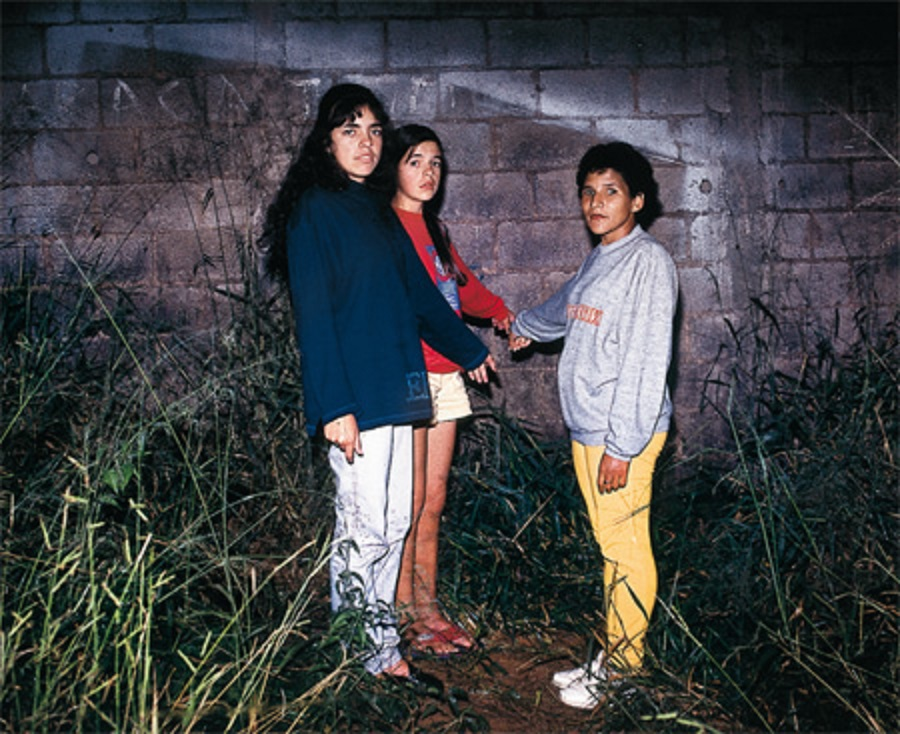

Surgem revelações sobre o caso Varginha
Ufólogos alegam existir um vídeo de 40 minutos filmado por militares com imagens da criatura que apareceu em 1996. Também existiriam diversas fotos apresentando o ET.
Segundo uma das fontes, que não se identificou, no vídeo o alienígena está vivo e aparece de pé ao lado da viatura do Exército.

O ET supostamente apareceu em 20 de janeiro de 1996 no município sul-mineiro. Daquele dia, três meninas alegaram ter visto um ser estranho, baixinho e de olhos vermelhos e que não era similar a nenhum outro animal conhecido. Há ainda vários relatos de aparições no mesmo dia e até de capturas do suposto ET.
Leia a matéria